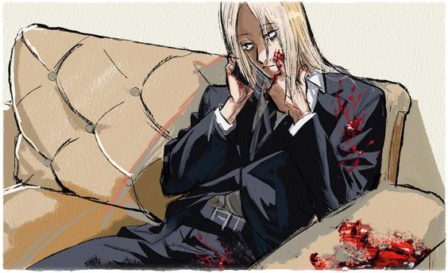

| Descrição Pessoal |
| Idade |
26 |
| Gênero |
Homen |
| Altura |
180 centímetros |
| Peso |
73kg |
| Cor de cabelo |
Loiro |
Habilidades
- Nível geral de habilidade
- Shishiba é membro da Ordem e um dos assassinos mais fortes da JAA. Outra prova de suas habilidades é que ele também é o mentor de Osaragi, outro membro poderoso da Ordem. Satoru Yotsumura afirmou que se Shishiba tivesse uma mentalidade diferente, ele poderia estar em uma posição mais elevada.
Kashima , um poderoso assassino que trabalhava para Slur , classificou Shishiba como um alvo de classificação A na lista de alvos que ele criou,e ele era forte o suficiente para derrotar seu antigo mentor.
- Velocidade e reflexos aprimorados
- Shishiba é extremamente rápido com reflexos igualmente apurados. Ele foi rápido o suficiente para quebrar o pescoço de Kashima sem que ele percebesse, e é capaz de usar seu martelo para bloquear balas de um rifle automático enquanto dirigia, além de evitar dois possíveis tiros na cabeça. Ele também foi capaz de evitar um poderoso ataque de Takamura, ataques de Yotsumura, bem como desviar um poderoso projétil de alta velocidade disparado por Kumaomi .
- Força Aprimorada
- Shishiba possui uma força física incrível, sendo capaz de arrastar um homem para fora de um veículo com uma mão enquanto dirige. Ele também foi capaz de desviar ataques do bastão de três seções de Yotsumura, que era poderoso o suficiente para virar carros e cortar vigas de aço sólidas, bem como casualmente agarrar Haruma através de uma parede com uma mão
Equipamentos
- Martelos de Garra
- Shishiba usa um par de martelos de garra em batalha com habilidade incrível e habilidade cruel. Ele afirma que são as armas ideais, pois podem acertar ou arrancar coisas e que nunca ficam sem balas ou precisam ser afiadas.Seus martelos também são polidos o suficiente para ver o reflexo de uma pessoa nele, e duráveis o suficiente para bloquear projéteis de alta velocidade, como balas ou pregos.
Voltar
